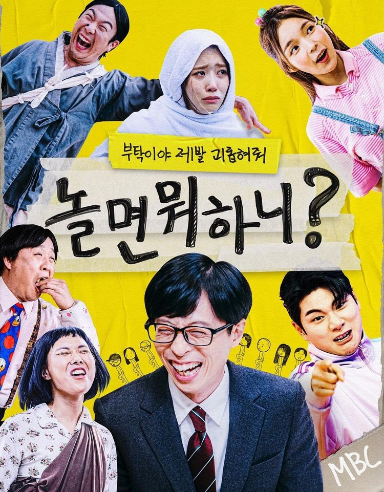
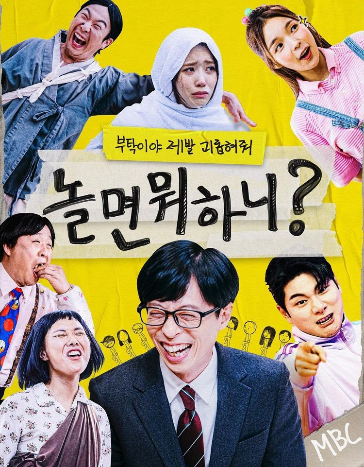

놀면 뭐하니?
 대한민국의 지상파 방송국 MBC에서 방영하는 예능 프로그램이다. 연출자 김태호와 그가 연출한 무한도전의 출연자 국민MC 중 하나인 유재석이 다시 의기투합한 예능 프로그램이다. 팬덤 사이에서는 무한도전의 정신적 후속작으로 취급받으며 실제로도 무한도전과 관련된 인물들을 출연시키거나 아이템들을 활용한다.
'놀면 뭐하니?' 멤버들이 잔칫상을 차리기는 모습이 공개됐다.
10일 방송된 MBC 예능프로그램 '놀면 뭐하니?'에서는 노비들의 잔칫상 차리기가 전파를 탔다.
이날 유재석은 "요런 느낌 참 좋아해 내가. 옛날엔 몰랐는데 고즈넉한 분위기가 좋아지는지 모르겠어"라며 한옥 식당을 마음에 들어했다. 이어 뉴진스에 과몰입한 박진주가 등장했다. 이에 유재석은 "제발 걸그룹 모드에서 빠져나와"라며 질색했다. 하하는 아침에 해 사진을 보내준 이이경에 고마워했고, 유재석과 박진주가 질색했다. 하지만 혼자 사진을 받지 못한 신봉선은 "해 사진 보내는 기준이 뭐야"라며 서운해했고, 이이경은 "어제 전화를 쫙 돌렸다. 근데 전화를 못 받은거야. 통화도 못하고 어색한데 사진을 보내기 그런거다"라고 해명했다.
식사를 하던 중 갑자기 틀어진 노래와 함께 등장한 무리들에 멤버들이 깜짝 놀랐다. 박창훈 PD는 "네 이놈들 지금 밥이 넘어가느냐. 해가 중천인데 노비들이 일 안하고 이렇게 밥을. 내가 추노 대장이니까 너네가 노비가 맞다"라고 말했고, 유재석은 "창훈아 너는 이제 연기자가 되는거야? 나 PD중에 분장한거 처음 봤어"라며 폭소를 터트렸다.
대감마님댁 앞마당으로 이동한 유재석은 "이걸 하려면 미리 얘기를 해서 하면 되지. 집은 되게 좋은데? 여기 예쁘다"라며 멤버들과 함께 흥을 터트렸다. 유재석은 뉴진스 과몰입에서 나오지 못한 박진주에 "미안한데 진주 자꾸 아이돌 표정 하지마. 거기다 뉴진스를 왜 하냐고 지금"라고 말했고, 이이경은 "애교 머리도 본인이 직접 딴거다"라고 설명했다. 이어 유재석은 "노비들끼리 연분나고 그런 분들 있을 수 있다. 너 이 안에 혹시라도 썸씽 있어서 엉망진창 되면 가만 안둔다"라며 이이경에 경고했다.
소고기가 걸린 퀴즈에 박진주는 "제발 하지 말아요. 멍청한 거 들켜"라며 걱정했다. 그리고 이미주는 "전원 정답은 절대 안돼요 나 때문에"라며 자신없어했고, 유재석은 "우리 노비들 중에 지식 문제에 대해 스트레스를 많이 받는 사람들이 있다"라고 말했다.
박진주의 깡깡이 면모에 신봉선은 "웃기려고 하지마 무식한 걸로 웃기던 시절을 지났어"라고 소리쳐 웃음을 자아냈다. 진전이 없는 상황에 유재석은 "이거 언제 끝나. 내가 앞글자를 말할 테니까 연달아"라며 문제 방식을 바꿨다. 끝나지 않는 퀴즈에 유재석은 "문제를 언제까지 내"라며 지겨워했다. 세 명의 성공으로 겨우 소고리를 얻어낸 멤버들이 본격적으로 잔칫상을 차리기 위해 자리를 옮겼다.
이이경은 "장작은 가슴으로 깨는거다"라며 장작 패기에 자신했다. 하지만 어설픈 실력에 유재석은 "너 안 해봤지? 그게 뭐야. 이렇게 해서 언제 장작 패냐. 진짜 망치질 하냐고. 노비 연기했는데 왜 이렇게 장작을 못 쪼개"라며 답답해했다. 이어 유재석의 장작 패기 실력에 이이경은 "천생 노비네"라고 깐족거려 웃음을 자아냈다.
솥뚜껑에 고기를 굽기로 한 멤버들은 올리브유를 두른다는 유재석에 경악했다. 몰래 다가간 이이경이 유재석을 제압하고 멤버들이 무사히 고기를 올렸다. 주물럭 하나에 멤버들이 뛰어다녔고 유재석은 "왜 이렇게 짜게 했어. 간장을 왜 이렇게 들이부었어. 스테이크 느낌으로 하려고 했던건데"라며 정준하에 따졌고, 정준하가 자신의 실수를 인정했다. 하하는 "수노비 기절시켜 기절시키는게 맞는거 같아"라며 고기를 살리겠다며 뛰어다니는 유재석에 질색했다.
한편 멤버들이 '발 빠른 노비' 지령에 성공해 추석 선물을 획득했다.
 대한민국의 지상파 방송국 MBC에서 방영하는 예능 프로그램이다. 연출자 김태호와 그가 연출한 무한도전의 출연자 국민MC 중 하나인 유재석이 다시 의기투합한 예능 프로그램이다. 팬덤 사이에서는 무한도전의 정신적 후속작으로 취급받으며 실제로도 무한도전과 관련된 인물들을 출연시키거나 아이템들을 활용한다.